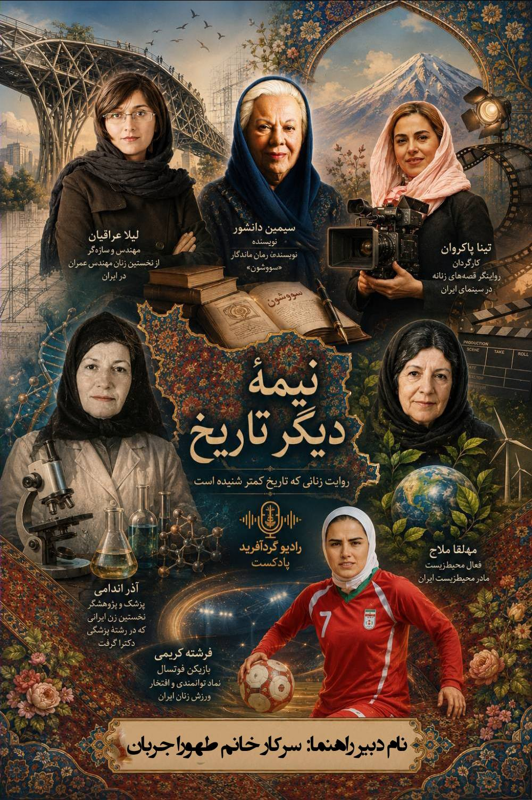

۱
قسمت اول_ لیلا عراقیان
از نخستین زنان مهندس عمران در ایران
داستان زندگی زنان بزرگ و تأثیرگذار تاریخ ایران

از نخستین زنان مهندس عمران در ایران
از پر افتخار ترین و توانمند ترین زنان ایران و بازیکنان فوتسال
از شناخته شده ترین تهیه کننده و کارگردان های ایران
نویسنده ی موفق ایرانی با رمان معروف سووشون
نخستین زن که در رشته ی پزشکی دکترا گرفت
مادر محیط زیست ایران
برای اضافه کردن پادکست جدید، یک کارت جدید کپی کنید و فایل mp3 را در کنار بقیه فایلها قرار دهید.